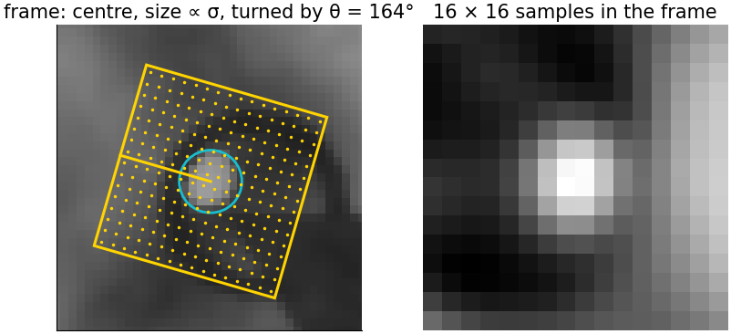
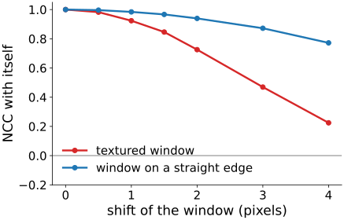
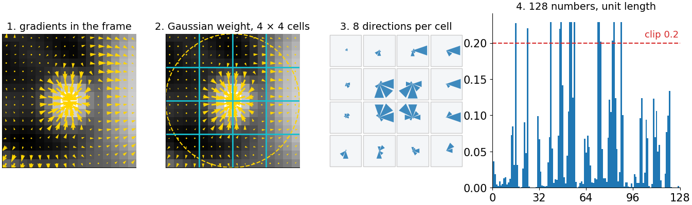
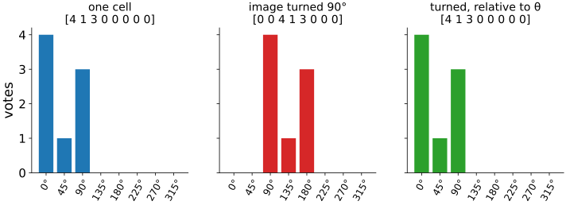
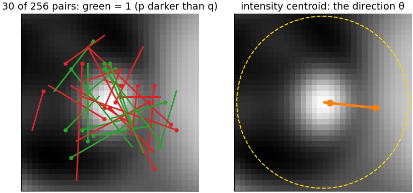
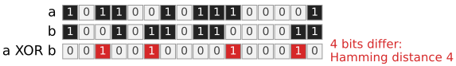
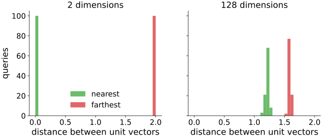
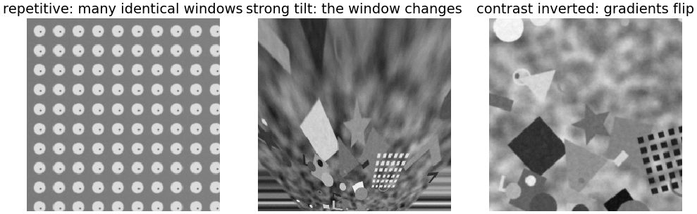

Describing a keypoint: gradient histograms and bits
Image analysis
About this lecture
The previous unit found keypoints, each a small frame (x, y, \sigma, \theta). Now we turn the window around each keypoint into a vector, so that the same physical point gives nearby vectors in both images.
Invariance by normalisation: read the window in the keypoint’s frame.
The same point in two views → nearby vectors (here distance 0.52); different points → distant vectors (0.71, 0.77). Matching (next unit) only compares vectors.
Invariance by normalisation

The central idea of the day: the frame (x, y, \sigma, \theta) is measured, so we sample the window in that frame:
centred at (x, y),
size proportional to σ,
turned by θ.
Translation, zoom and rotation are gone before anything is computed. What is left for the descriptor to tolerate: lighting, small errors in the frame, small deformations, noise.
The simplest descriptor: the normalised patch
Resample a 16 × 16 patch in the frame, subtract its mean, divide by its length: compare two patches by the dot product, the normalised cross-correlation (NCC; owned by the template matching unit).
Insensitive to gain and offset (brightness and contrast).
But every number depends on the exact position: shift a textured window by 2 px and the NCC with itself drops to 0.73, by 3 px to 0.47 (right, red).
A window on a straight edge stays similar along the edge (blue): not distinctive.

Gradient histograms, step by step

Gradients in the window, in the keypoint frame, weighted by a Gaussian (the centre counts more; frame errors matter most at the rim).
4 × 4 cells; in each, a histogram of gradient directions in 8 bins of 45°. Each vote is shared between neighbouring bins and cells (soft binning).
Concatenate: 4 × 4 × 8 = 128 numbers. 4. Normalise to length 1, clip at 0.2, normalise again.
Why it works
Within a cell, where exactly a gradient sits does not matter: small shifts and deformations change little. Which way it points does matter: the histogram keeps the shape.
Gain multiplies all gradients: removed by normalising; an offset does not change gradients at all. Clipping at 0.2: one bright highlight cannot dominate.
The same idea as the complex cells of the visual cortex: an oriented response, pooled over a small area.

One cell’s four gradients give [4, 1, 3, 0, 0, 0, 0, 0]; turning the image by 90° shifts the histogram by two bins; measured relative to θ it is the same again.
The math: invariance and soft binning
Affine intensity changeI' = aI + b, a > 0: \nabla I' = a\nabla I, so every gradient direction is unchanged and every magnitude is multiplied by a. Every histogram entry scales by a; dividing by the length removes a; b never appears. With a < 0 (contrast inversion) every direction turns by 180°: the descriptor changes completely.
Clipping makes the vector approximately invariant to non-linear changes that affect a few large gradients (saturation, gamma).
Soft (trilinear) binning: a gradient of magnitude m at continuous cell coordinates (u, v) and bin coordinate o adds m\,(1 - |u - u_i|)(1 - |v - v_j|)(1 - |o - o_k|) to the 8 surrounding bins (i, j, k); the descriptor is then a continuous function of the frame.
Rotation: sample at \mathbf x_0 + \sigma R(\theta)\mathbf u and measure gradient angles in the frame; turning the image by φ changes θ by φ and leaves the descriptor unchanged up to resampling.
Try it: a descriptor, step by step
Binary descriptors
Compare intensities at pairs of points in a smoothed patch: bit b_i = 1 if I(\mathbf p_i) < I(\mathbf q_i).
256 fixed pairs (chosen once, at random with a seed, or learned to be uncorrelated) → 256 bits = 32 bytes.
Only the order of two intensities matters: invariant to any increasing change of intensity.
Rotation: turn the pattern by θ, with θ from the intensity centroid (the direction from the keypoint to the brightness-weighted centre of the patch; first moments, see region properties).
Smooth first: single pixels are noisy, and a bit flips easily.

Comparing descriptors: distances
descriptor
distance
gradient histogram
L2 (Euclidean); L1 or χ² weight small bins more
normalised patch
L2 (= NCC, see the math)
binary
Hamming: the number of differing bits
The Hamming distance is an exclusive-or and a bit count: a few machine instructions per 64 bits, tens of times faster than 128 floating-point differences.

The math: distances
Unit vectors: \|\mathbf a - \mathbf b\|^2 = \|\mathbf a\|^2 + \|\mathbf b\|^2 - 2\,\mathbf a\cdot\mathbf b = 2 - 2\,\mathbf a\cdot\mathbf b. L2 and the cosine (for normalised patches: the NCC) give the same ranking.
Root descriptor: L1-normalise (\sum a_i = 1), take square roots: \|\sqrt{\mathbf a} - \sqrt{\mathbf b}\|^2 = 2 - 2\sum_i\sqrt{a_ib_i}, the Hellinger distance between histograms, which weights small bins more.
Hamming: d_H(\mathbf a, \mathbf b) = \operatorname{popcount}(\mathbf a \oplus \mathbf b).
Two unrelated binary descriptors with balanced bits differ in each bit with probability ½: d_H \sim \mathrm{Binomial}(n, \tfrac12), mean n/2, standard deviation \sqrt n/2: 128 ± 8 for 256 bits. A true match at distance 40 lies 88/8 = 11 standard deviations below.
Intensity centroid: m_{pq} = \sum x^py^q I(x, y) over a disc around the keypoint; \theta = \operatorname{atan2}(-m_{01}, m_{10}) (counter-clockwise on the screen, y down).
The math: distances in high dimensions
For random unit vectors, the nearest and the farthest neighbour of a query among 400:
in 2 dimensions: nearest at 0.01, farthest at 2.00;
in 128 dimensions: nearest at 1.22, farthest at 1.59.
Concentration of distances: in many dimensions all distances look alike. So an absolute distance threshold separates good and bad matches badly, and the next unit compares the nearest with the second nearest instead.

Trade-offs
gradient histogram
binary
size
128 numbers (512 bytes as floats)
256 bits (32 bytes)
compute and compare
slower
very fast (XOR + bit count)
distinctiveness
higher, more robust to blur and viewpoint
lower
lighting
gain and offset; clipping helps for others
any increasing change
typical use
accuracy: 3D reconstruction, registration in microscopy
speed: video, robots, phones
In our demo, under a blur of σ = 2, the nearest descriptor is the true partner for 80 % (histogram) and 84 % (binary) of the keypoints; the binary descriptor has fewer keypoints with a partner (38 against 59).
Try it: binary descriptors
Where descriptors fail

Repetitive texture: distinctive locally, not globally (many identical windows).
Strong viewpoint change: the window content itself changes.
Another modality (fluorescence vs brightfield, light vs electron microscopy): gradients may reverse. Orientation histograms without sign, or mutual information on intensities.
Further uses and names
The same cell histogram of gradient directions, computed densely over a window, is the HOG feature of window detectors, the input to many classifiers before neural networks (support vector machines).
Learned descriptors: networks trained on many image pairs; the same matching steps follow (further reading).
Image libraries call the gradient histogram of this unit “SIFT descriptors” and the steered binary one “ORB”.
Summary
Read the window in the keypoint frame: translation, zoom and rotation are removed before describing.
Normalised patch: simple, invariant to gain and offset, but fragile to small shifts.